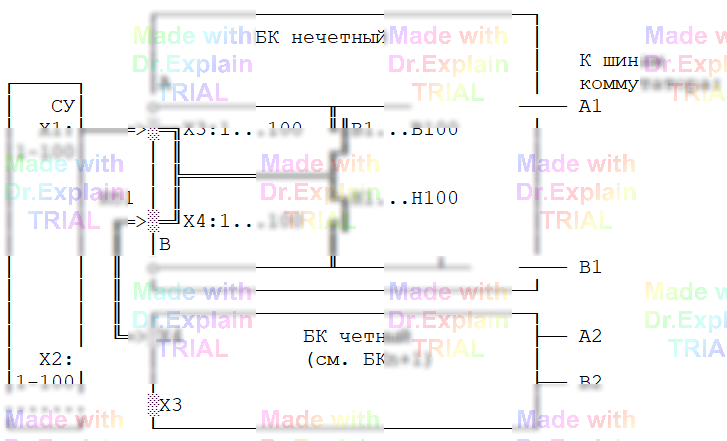

4.2 Объединение блоков коммутации по входам
При проверке простого кабеля хватало двух внутренних шин (A/B) — одна под измеритель, другая под опорное/второе подключение. Когда же требуется одновременно измерять и подавать стимулирующие воздействия в объект контроля (ОК), двух шин уже недостаточно: нужно гибко маршрутизировать точки ОК и источники стимулов. Поэтому блоки коммутации (БК) объединяют в пары (или группы) по входам.
Принцип объединения («1:1»)
В группе БК их одноимённые входные контакты запараллеливаются «1:1»: контакт 1 разъёма X3 первого (начального) БК соединяется с контактом 1 разъёма X3 следующего БК и т.д. То же касается контактов X4 и соответствующих нормально разомкнутых ключей верхнего (В1…В100) и нижнего (Н1…Н100) рядов. На схеме (рис. 4.1) это показано двойной линией.

Подключение к системе управления
Каждый выходной разъём системы управления (СУ) подключается к назначенной ему группе БК — конкретно к разъёму X3 начального БК этой группы. Далее все БК группы объединяются между собой по входам с помощью специальных кабелей‑перемычек (на рис. 4.1 обозначены как Кб1).
Что это даёт
- Любой сигнал, поступающий на контакт X3 начального БК, попадает на одноимённый контакт всех остальных БК группы.
- Через контакты релейного коммутатора (ключи В1…В100 и/или Н1…Н100) любая точка ОК может быть подключена к любой внутренней шине (A и/или B) любого БК в группе.
- Количество одновременно замкнутых подключений произвольно (в пределах аппаратных ограничений конкретной установки).
- Появляется возможность независимо разводить измерительные каналы и линии подачи стимулов, комбинируя их для задач контроля функционирования.
Минимальный алгоритмический эскиз
// 1. СУ подключена к X3 начального БК группы
// 2. Кабели-перемычки объединяют X3 (и X4, при необходимости) всех БК "1:1"
// 3. Замкнуть нужные ключи Вn/Нn в БК#k для маршрутизации точки ОК на шину A или B
// 4. Подать стимул на выбранную шину из СУ
// 5. Замкнуть ключ(и) в другом БК, чтобы подключить измеритель
// 6. Выполнить измерение / оценку реакции
Такой способ построения коммутационного поля — основа реализации сложных сценариев контроля функционирования, где требуется подача управляющих напряжений и одновременный съём измерений с множества точек ОК.